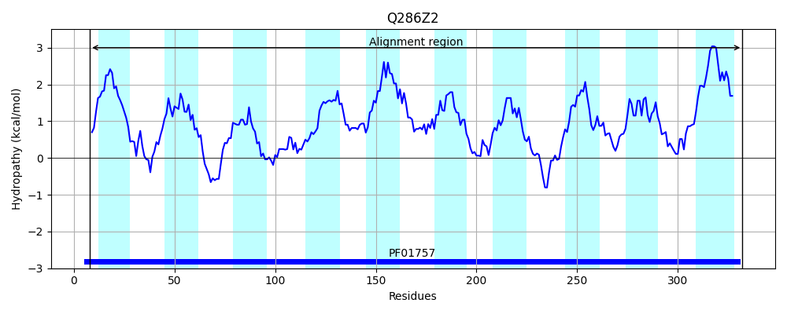
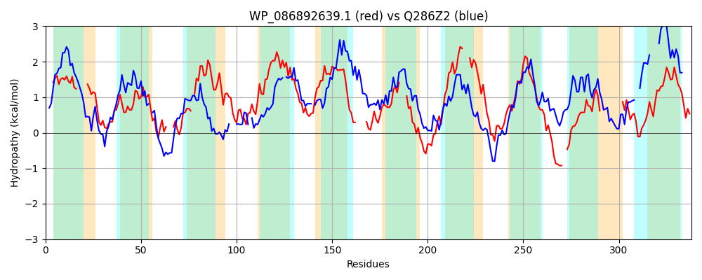

Hit Accession: Q286Z2
Hit TCID: 9.B.97.1.2
Hit Description: gnl|BL_ORD_ID|13185 gnl|TC-DB|Q286Z2|9.B.97.1.2 O-acetyltransferase OS=Escherichia phage phiV10 GN=oac PE=4 SV=1
Mach Len: 338
e:0.000000
Query TMS Count : 10
Hit TMS Count: 10
TMS-Overlap Score: 5.150000
Predicted Substrates:None
BLAST Alignment:
Score: 162 , Bit scores: 67 bits, E-value: 1.4e-12, Alignment length: 338, Percentage identity: 24
Query: 6 LDSLKIIAAFCIVVVHS-----GTFPEFGYLVGGLLENCTRWALPFFFLTSGFMLGLAREINLG---RKVNKILQIL-FWSSIIYLPIIFIKSIVMHDSFIERIVNLQTFFGGVYFHLWFLISLIVAFLFVNYFSSNLKITQSLSISFVIILLCWITDLLRSC-----GIGHQEFYLFRLLMGASL---VYLGYLYSVNKDRFHFNQTFLLYIIIFGIV---SVLAESLLMYYFFGSEIHERQLPIGAVILAIGLLLFGIGRKKANETFLS--KCGSKYSLGVYLLHPFIL-----------TFTSELFKRIGVPYSTPNLLIAFFGSLAVMIFVERY 310
++ +++ A F +VV+HS G+ + ++E+ TR ++P F + SG +L + N+ ++ N++ IL FWS+I YL + S + ++ NL F +++H+W+L + I F+ + S + S I VI++ W+ L S G+ LF++ + +SL + LG + N+ + +L I++ + + +++ +Y +++ + + AI ++F I N+T L K S +LG+YL+HP I+ + E+F I +P S I F SLA+++F+ ++
Sbjct: 8 IELIRVAACFLVVVLHSVIIGMNETGSSGWDILNIIESFTRISVPLFIMISGALL-IKESTNMNSSLKRANRLFIILLFWSAIYYLYRSHVNSFPID---VKSFFNL-FFRSQIFYHMWYLYAAI-GFVIIMPLLSKFYL-HSNKIDVVILVWLWMLLLFFSLLNVYLGLNLNINNLFQVSIFSSLAVYLLLGKIILDNQVNMTNSTKIMLTIMLTACTFATAFITKNISVYRGPVNQMFYDNSSLFIAMSAICFMVFMINTPVKNKTILHIVKFISPCTLGIYLVHPLIIDILRRFLLDKYSIHPEMF--IVIPLS----FIVFLISLAIVVFLRKF 332 | Protein Hydropathy Plots: |
|---|
 |  |
Pairwise Alignment-Hydropathy Plot:
|
|---|
|  |